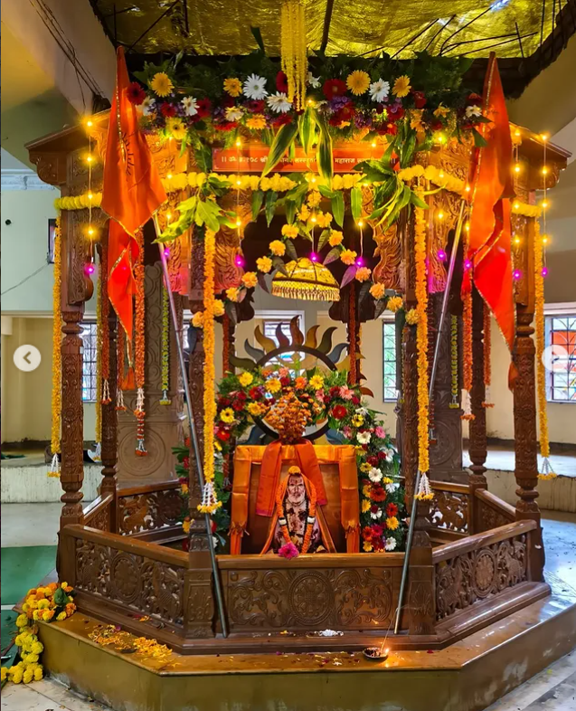
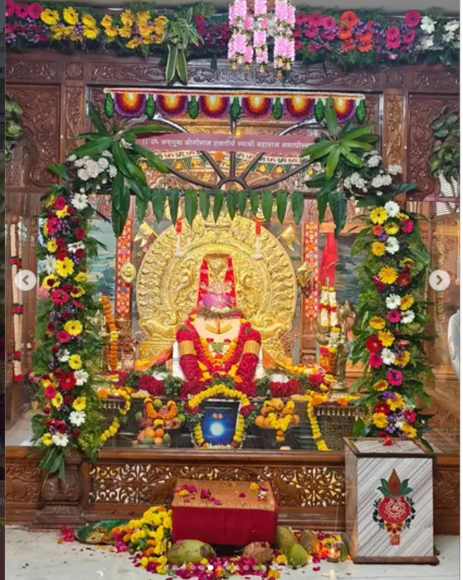
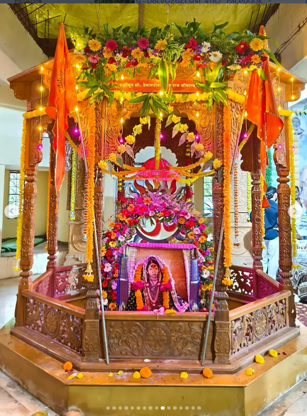
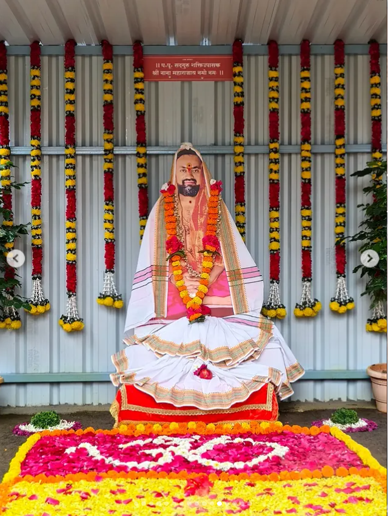
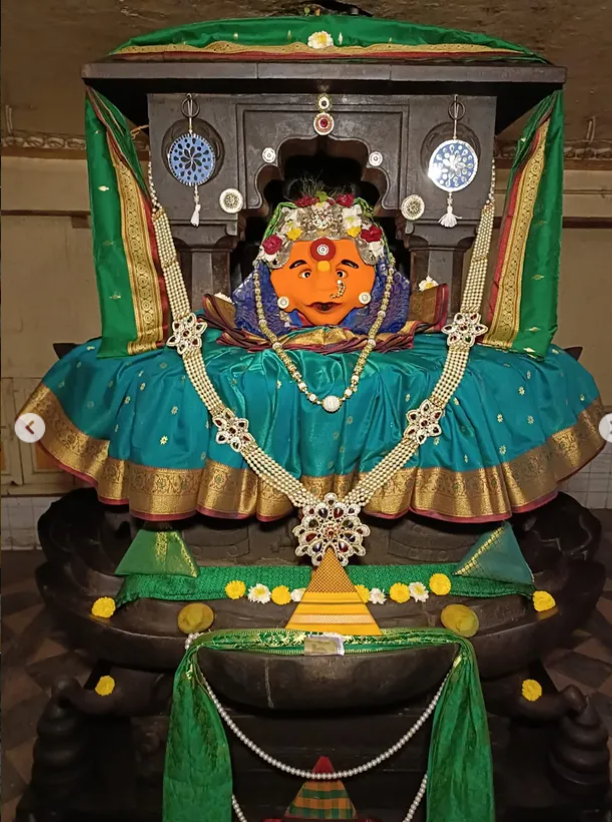
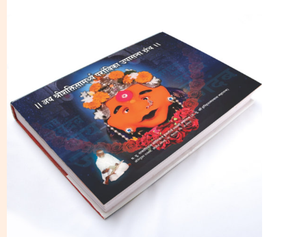
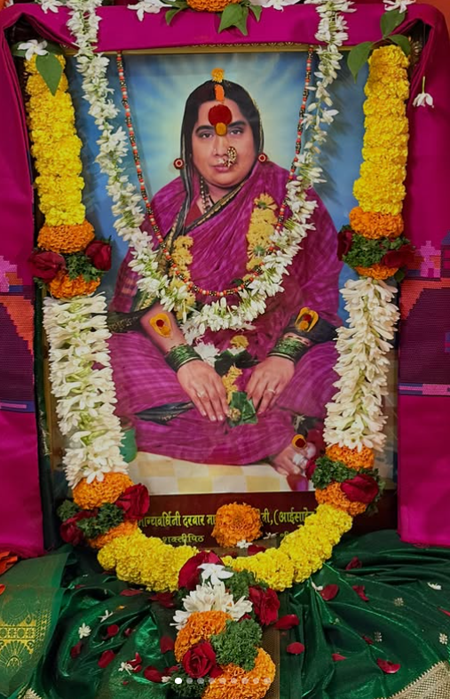
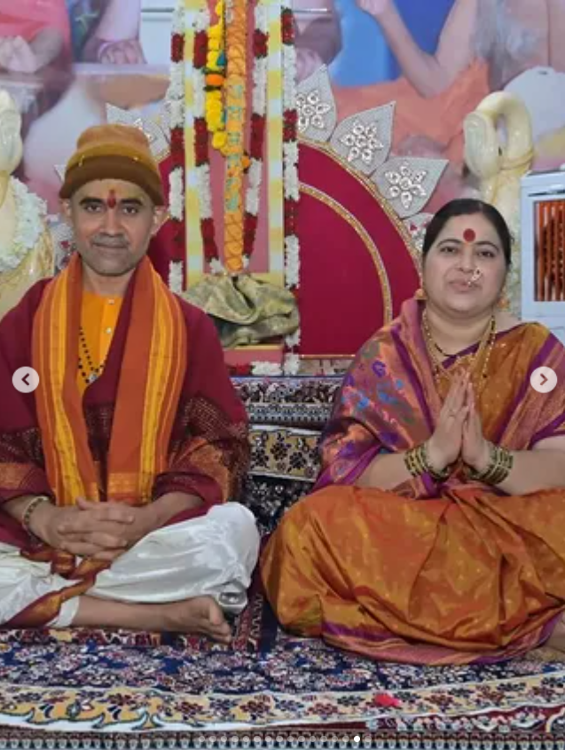

संस्थान परिचय
श्री क्षेत्र रेणुका दरबार हे श्री क्षेत्र सोनई, ता. नेवासा, महाराष्ट्र येथे स्थित श्रद्धा, साधना आणि सद्गुरू परंपरेशी जोडलेले पवित्र स्थान आहे.
प. पू. माता प्रेमानंदीनाथ महाराज पब्लिक चॅरिटेबल ट्रस्ट संचालित


॥ श्री रेणुका मातेचे कृपाछत्र सर्वांवर राहो ॥
श्रद्धा, साधना आणि सद्गुरू भक्तीचा पवित्र अनुभव — श्री क्षेत्र रेणुका दरबार, सोनई.

श्रद्धा, साधना, श्री रेणुका माता उपासना आणि सद्गुरू परंपरेशी जोडलेले पवित्र स्थान.
श्री क्षेत्र रेणुका दरबार हे श्री क्षेत्र सोनई, ता. नेवासा, महाराष्ट्र येथे स्थित श्रद्धा, साधना आणि सद्गुरू परंपरेशी जोडलेले पवित्र स्थान आहे.
श्री रेणुका दरबार येथे भगवती श्री रेणुका मातेचे दर्शन, पूजन व अभिषेक सेवा भक्तांसाठी उपलब्ध आहेत. हे स्थान जगदंबा उपासना आणि सद्गुरू भक्तीचे केंद्र म्हणून ओळखले जाते.
सद्गुरू सिद्धनाथ महाराज आणि प. पू. कृष्णानंद सरस्वती स्वामी महाराज यांच्या मार्गदर्शनाखाली प. पू. योगीराज हंसतीर्थ स्वामी महाराजांचा परमार्थ प्रवास घडला. या परंपरेत माता प्रेमानंदीनाथ महाराजांचेही महत्त्वपूर्ण स्थान आहे.
श्री क्षेत्र रेणुका दरबार, सोनई येथील सद्गुरूंच्या पवित्र समाधीस्थानांचे दर्शन व गुरूपरंपरेचा सविस्तर परिचय.

प. पू. योगीराज हंसतीर्थ स्वामी महाराजांचे प्रत्यक्ष पिता आणि सद्गुरू म्हणून प. पू. कृष्णानंद सरस्वती स्वामी महाराजांचे गुरूपरंपरेत अत्यंत महत्त्वाचे स्थान आहे. प. पू. सद्गुरू सिद्धनाथ महाराजांच्या आज्ञेनुसार साधना व उपासना प्रत्यक्ष जीवनात आचरणात आणताना त्यांनी वेळोवेळी मार्गदर्शन केले. त्यांनी ‘कुटीचक’ संन्यास स्वीकारला होता. आयुर्वेदाचे ज्ञान, भागवतादी ग्रंथांचा गाढा अभ्यास आणि आई भगवतीची नित्य उपासना ही त्यांच्या जीवनाची वैशिष्ट्ये होती.
भाद्रपद वद्य एकादशी, इ.स. १९६६ रोजी ते समाधिस्थ होऊन ओंकारात विलीन झाले. त्यांचे पवित्र समाधिस्थळ श्री रेणुका दरबार, श्री क्षेत्र सोनई, ता. नेवासा येथे आहे.
॥ सिद्धाय सिद्ध पुरुषाय परमानंद मूर्तये साक्षात ब्रह्मरूपाय कृष्णानंदाय नमो नमः ॥

पूर्वाश्रमीचे प. पू. हरिहरानंदनाथ महाराज, म्हणजेच सोनईचे प. पू. अण्णा महाराज, हे शिवशक्ती उपासनेच्या या परंपरेचे प्रमुख अध्वर्यु होते. जन्मापासून असलेली आध्यात्मिक वृत्ती सद्गुरुकृपेने अधिक दृढ झाली. सद्गुरू आज्ञेने त्यांनी अत्यंत तीव्र उपासना व साधना केली. या साधनेच्या परिपाकातून आई भगवती श्री रेणुका मातेची अनुभूती प्राप्त झाल्याचे परंपरेत सांगितले जाते. पुढे त्यांनी अनेक शिष्यांना संसारात राहून परमार्थ साधण्याचा मार्ग दाखविला.
श्री रेणुका मातेची सगुण उपासना, कुंकवाचा प्रसाद, संगीतोपासना, कीर्तन, प्रवचन, मूर्तिकला आणि अखंड पायी प्रवास ही त्यांच्या कार्याची वैशिष्ट्ये होती. त्यांनी संन्यासपरंपरेतील ‘हंस दीक्षा’ स्वीकारली. पौष वद्य एकादशी, इ.स. १९९९ रोजी ते समाधिस्थ झाले. त्यांचे समाधिस्थळ श्री रेणुका दरबार, श्री क्षेत्र सोनई येथे आहे.
॥ ॐ नमो नारायणाय सिद्ध पुरुषाय ब्रह्मीभूत योगीराज हंसतीर्थ स्वामी महाराजाय नमो नमः ॥

प. पू. योगीराज हंसतीर्थ स्वामी महाराजांच्या पूर्वाश्रमातील सहधर्मचारिणी म्हणजे सौ. आईसाहेब. पूर्वाश्रमात हरी–रमा या नावांनी परिचित असलेल्या या दांपत्याच्या जीवनात सद्गुरुनिष्ठा, साधना आणि संसारातून परमार्थाकडे जाणारा मार्ग स्पष्टपणे दिसतो. सद्गुरुकृपेने ‘मृतदीक्षा संस्कार’ झाल्यानंतर त्यांना प. पू. हरिहरानंदनाथ आणि प. पू. प्रेमानंदिनाथ अशी नावे प्राप्त झाली.
अश्वत्थ सेवा, प्रदक्षिणा, सद्गुरू आज्ञेनुसार नियमित जप-अनुष्ठान आणि कठोर तपश्चर्या यांमधून त्यांच्या साधनेचा विस्तार झाला. शिष्यपरिवारावर मातृवत प्रेम करणाऱ्या सौ. आईसाहेबांना अन्नपूर्णास्वरूप मानले जाते. भाद्रपद वद्य चतुर्थी, इ.स. १९७८ रोजी त्यांचे महानिर्वाण झाले. त्यांचे पवित्र समाधिस्थळ श्री रेणुका दरबार, श्री क्षेत्र सोनई येथे आहे.
॥ ॐ नमो नारायणी ब्रह्मीभूत माता प्रेमानंदिनाथ महाराजाय नमो नमः ॥

प. पू. योगीराज हंसतीर्थ स्वामी महाराजांच्या ‘प्रपंचातून परमार्थ’ या जीवनदृष्टीतून पुढे आलेल्या परंपरेतील ज्येष्ठ पुत्र राधेश्याम म्हणजे प. पू. नाना महाराज. प. पू. स्वामी महाराजांच्या आज्ञेने त्यांनी वेदांचा अभ्यास केला आणि पुढे पाठशाळेत अनेक विद्यार्थ्यांना वेदाध्ययन दिले.
अमृत महोत्सवाच्या प्रसंगी प. पू. स्वामी महाराजांनी स्वतःचा मुकुट प. पू. नाना महाराजांना देऊन श्री शक्तीपीठ योगपीठासनाची उपासना आणि श्री रेणुका माता मंदिर संस्थान गादीचा अधिकार दिल्याचे गुरूपरंपरेत नमूद आहे. भक्तीसेवा, श्रींची सेवा आणि धर्माचरण त्यांनी नियमितपणे सुरू ठेवले. काही काळ वानप्रस्थाश्रमात राहिल्यानंतर वैशाख शुक्ल चतुर्थी, शनिवार दि. १५ मे २०२१ रोजी ते शिवस्वरूप झाले. आजही त्यांच्या आज्ञेनुसार परंपरेतील कार्य पुढे सुरू असल्याचे संदर्भात नमूद आहे.
॥ प. पू. सद्गुरू श्री नाना महाराज की जय ॥
श्री क्षेत्र रेणुका दरबारातील योगपीठासन, भगवती उपासना आणि काचमंदिराचा पवित्र इतिहास.

महाराष्ट्र ही संतांची भूमी आहे. अशाच संतांच्या वास्तव्याने पावन झालेले स्थान म्हणजे श्री क्षेत्र सोनई येथील रेणुका दरबार. प. पू. योगीराज हंसतीर्थ स्वामी महाराज (हरिहरानंद महाराज) यांनी येथे श्री रेणुका मातेचे भव्य काचमंदिर उभारले. गाभाऱ्यात योगपीठासनावर श्री रेणुका मातेची स्थापना करून या पवित्र स्थानाला “शक्तीपीठ” म्हणून गौरविण्यात आले.
प. पू. स्वामी महाराज आणि प. पू. प्रेमानंदीनाथ महाराज यांनी प्रारंभी अत्यंत साध्या परिस्थितीत राहून भगवतीची रात्रंदिवस उपासना केली. पुढे नित्य उपासना, प. पू. स्वामींची खडतर साधना, विविध उत्सव, अन्नदान आणि वाढत गेलेला शिष्यपरिवार यांमुळे रेणुका दरबार आश्रमाचा विस्तार होत गेला.
सद्गुरू आज्ञेने आणि प. पू. कृष्णानंद स्वामी महाराजांच्या मार्गदर्शनाखाली हे कार्य सुरू होते. इ.स. १९६६ मध्ये प. पू. कृष्णानंद स्वामी महाराज ॐकार स्वरूपात समाधिस्थ झाल्यानंतर प. पू. योगीराज हंसतीर्थ स्वामी महाराजांनी सद्गुरू आज्ञेने ॐकार योगपीठासन व भगवती मंदिर स्थापण्याचा निर्णय घेतला. पुढे योगपीठासनावर भगवतीची स्थापना झाली आणि आजचे काचमंदिर उभे राहिले.
प. पू. स्वामी महाराजांनी योगपीठासनाचे आगळे आध्यात्मिक महत्त्व सांगितले आहे. या उपासनेचा भाव अधिक स्पष्ट व्हावा म्हणून त्यांनी योगपीठासन स्तोत्र आणि अभंगांची रचना केली. या रचनांमध्ये योगपीठासनाचा ॐकार, प्रकृती-पुरुष ऐक्यभाव आणि आत्मसाक्षात्काराशी असलेला आध्यात्मिक संबंध व्यक्त होतो.
“हे ओंकार स्वरूप पीठासन प्रकृती पुरुष ऐक्य भाव जाण |
शिव शिवा स्वरूप प्रगट करून | आत्मसाक्षात्कार देते पहा ||”
योगपीठासन अभंगाच्या फलश्रुतीत नित्य स्मरणातून भवचिंता दूर होणे, निर्विचार स्थितीकडे वाटचाल होणे आणि अंतःकरण निर्विकार होण्याचा भाव व्यक्त केला आहे.
इ.स. १९९१ मध्ये काचमंदिर पूर्ण होऊन कळसाची स्थापना झाली. काचमहालात उत्सवमूर्तीची स्थापना करण्यात आली. रेणुका दरबार परिसरात श्री कालभैरव, शेषनाग, सप्तजल योगिनी, दत्तात्रेय, दक्षिणाभिमुख मारुती, चतुराई देवी, कार्तिकेय, शीतलादेवी, मल्हारी म्हाळसा कांत आणि श्रीकृष्ण चक्र अशा विविध देवतांची आवाहनपूर्वक स्थापना करण्यात आल्याचे संदर्भात नमूद आहे.
रेणुका दरबारचे माहात्म्य प. पू. स्वामी महाराजांनी ५१ ओव्यांमध्ये शब्दबद्ध केले. त्यामध्ये रेणुकामाता, योगपीठासन आणि ॐकार यांचा आध्यात्मिक संबंध अधोरेखित केला आहे.
“रेणुकाई माझे कुलदैवत असून योगपीठासनी स्थापियले ।
ओंकार हे यंत्र जीवनाचे सूत्र होई ब्रम्हरत्न सर्वकाळ ।।”
इ.स. १९९३ मध्ये श्री रेणुका दरबार येथे अमृत महोत्सव सोहळा संपन्न झाला आणि मोठ्या संख्येने भाविकांनी दर्शनाचा लाभ घेतला. या प्रसंगी करवीरपीठाच्या प. पू. शंकराचार्यांनी प. पू. हंसतीर्थ स्वामी महाराजांच्या साधनेमुळे माहूरगडची रेणुकाई या स्थानीही वास करीत असल्याचा भाव व्यक्त केल्याचे मूळ संदर्भात नमूद आहे. प. पू. योगीराज हंसतीर्थ स्वामी महाराजांच्या वास्तव्याने आणि साधनेने श्री रेणुका दरबार हे पवित्र शक्तीपीठ म्हणून भाविकांच्या श्रद्धेचे केंद्र बनले.
श्री रेणुका माता, सद्गुरू परंपरा आणि उपासनेशी संबंधित पवित्र ग्रंथ व आध्यात्मिक साहित्य.

परंपरेचा क्रम जतन करून सादर केलेली आध्यात्मिक यात्रा.





प. पू. सद्गुरू श्री नाना महाराज हे वैशाख शुक्ल चतुर्थी, दि. १५ मे २०२१ रोजी शिवस्वरूप झाल्यानंतर, त्यांच्या कार्याचा आणि सेवेचा वारसा त्यांचे ज्येष्ठ सुपुत्र प. पू. यज्ञेश्वर महाराज (गुरुजी) श्रद्धापूर्वक पुढे चालवीत आहेत.
सद्गुरू परंपरेचे पाईक म्हणून, प. पू. यज्ञेश्वर महाराज श्री क्षेत्र रेणुका दरबार येथील नित्योपासना, विविध धार्मिक उत्सव, आश्रमाची देखरेख तसेच व्यवस्थापनाची जबाबदारी सेवाभावाने सांभाळत आहेत.
त्यांच्या धर्मपत्नी प. पू. वेदवती आईसाहेब याही या सेवाकार्यात समर्पित भावनेने सहभागी असून, सद्गुरू परंपरेची सेवा, भक्ती आणि उपासनेचा वारसा जपण्याच्या कार्यात मोलाचे योगदान देत आहेत.
दोघांच्या सेवाभावी कार्यातून श्री रेणुका मातेची उपासना आणि सद्गुरू परंपरेचा आध्यात्मिक वारसा अखंडपणे पुढे चालत आहे.
नाथपरंपरा, सद्गुरू आज्ञा आणि श्री रेणुका मातेची उपासना यांचा सुंदर संगम.
प. पू. सद्गुरू सिद्धनाथ महाराजआदिनाथ-शिवापासून भगवान दत्तात्रेय, नवनाथ, निवृत्तीनाथ आणि ज्ञानेश्वर माऊलीपर्यंत चालत आलेल्या नाथपरंपरेतील सिद्धपरंपरेशी सद्गुरू सिद्धनाथ महाराजांचे स्थान जोडले जाते. त्यांनी प. पू. योगीराज हंसतीर्थ स्वामी महाराजांना उपासना, साधना आणि परंपरेविषयी वेळोवेळी मार्गदर्शन केले.
प. पू. कृष्णानंद सरस्वती स्वामी महाराजप. पू. योगीराज हंसतीर्थ स्वामी महाराजांचे प्रत्यक्ष पिता आणि सद्गुरू. आयुर्वेदाचे ज्ञान, भागवतादी ग्रंथांचा अभ्यास आणि भगवतीची नित्य उपासना ही त्यांची वैशिष्ट्ये सांगितली जातात. त्यांनी कुटीचक संन्यास स्वीकारला होता.
भाद्रपद वद्य एकादशी, इ.स. १९६६ — समाधी; समाधिस्थळ: श्री क्षेत्र रेणुका दरबार, सद्गुरू शक्तिपीठ काचमंदीर सोनई.
प. पू. योगीराज हंसतीर्थ स्वामी महाराजपूर्वाश्रमीचे हरिहरानंदनाथ महाराज, सोनईचे अण्णा महाराज. तीव्र उपासना व साधना, श्री रेणुका मातेची सगुण उपासना, कुंकवाचा प्रसाद, संगीतोपासना, कीर्तन-प्रवचन, मूर्तिकला आणि पायी प्रवास ही त्यांच्या कार्याची वैशिष्ट्ये होती. त्यांनी अनेक शिष्यांना संसारात राहून परमार्थ साधण्याचे मार्गदर्शन केले आणि हंस दीक्षा स्वीकारली होती.
पौष वद्य एकादशी, इ.स. १९९९ — समाधी; समाधिस्थळ: श्री क्षेत्र रेणुका दरबार, सद्गुरू शक्तिपीठ काचमंदीर सोनई.
प. पू. माता प्रेमानंदीनाथ महाराज (सौ. आईसाहेब)प. पू. योगीराज हंसतीर्थ स्वामी महाराजांच्या पूर्वाश्रमातील सहधर्मचारिणी. सद्गुरूनिष्ठा, तपश्चर्या, जप-अनुष्ठान, अश्वत्थ सेवा आणि शिष्यपरिवारावरील मातृवत प्रेम यासाठी त्यांचे स्मरण केले जाते. सद्गुरुकृपेने त्यांच्या आध्यात्मिक साधनेला उच्च अवस्था प्राप्त झाल्याचे परंपरेत वर्णन आहे.
भाद्रपद वद्य चतुर्थी, इ.स. १९७८ — महानिर्वाण; समाधिस्थळ: श्री क्षेत्र रेणुका दरबार, सद्गुरू शक्तिपीठ काचमंदीर सोनई.
प. पू. सद्गुरू श्री नाना महाराजप. पू. योगीराज हंसतीर्थ स्वामी महाराजांचे ज्येष्ठ पुत्र राधेश्याम, म्हणजे प. पू. नाना महाराज. त्यांनी वेदांचा अभ्यास करून विद्यार्थ्यांना वेदाध्ययन दिले. अमृत महोत्सवाच्या वेळी प. पू. स्वामी महाराजांनी त्यांना श्री शक्तीपीठ योगपीठासनाची उपासना आणि श्री रेणुकामाता मंदिर संस्थान गादीचा अधिकार दिल्याचे परंपरेत नमूद आहे.
वैशाख शुक्ल चतुर्थी, १५ मे २०२१ — शिवस्वरूप समाधिस्थळ: श्री क्षेत्र रेणुका दरबार, सद्गुरू शक्तिपीठ काचमंदीर सोनई.
प. पू. सद्गुरू श्री नाना महाराज यांच्या धर्मपत्नी.
प. पू. अखंड सौभाग्यवर्धिनी दरबार मातोश्री सौ. लक्ष्मीदेवी आईसाहेब या प. पू. सद्गुरू श्री नाना महाराज यांच्या धर्मपत्नी होत्या. श्री क्षेत्र रेणुका दरबारच्या सद्गुरू परंपरेशी त्यांचे जीवन श्रद्धा, भक्ती आणि सेवाभावाने जोडलेले होते.
इ.स. २०१५ मध्ये त्यांचे महानिर्वाण झाले समाधिस्थळ: श्री क्षेत्र रेणुका दरबार, सद्गुरू शक्तिपीठ काचमंदीर सोनई.
प. पू. सद्गुरू श्री आप्पा महाराजप. पू. योगीराज हंसतीर्थ स्वामी महाराजांचे द्वितीय चिरंजीव, उमाकांत जोशी. जप, अनुष्ठान, गायत्री पुरश्चरण, यज्ञ-याग, गायन-वादन, मूर्तिकला तसेच स्तोत्र, आरती व काव्यरचना या क्षेत्रांत त्यांचे योगदान आहे. अमृत महोत्सवाच्या वेळी त्यांना श्रीशक्ती दंड देऊन शिष्यांना गुरुमंत्र देण्याचा आणि नाथपरंपरा पुढे चालविण्याचा अधिकार दिल्याचे संदर्भात नमूद आहे.
मार्गशीर्ष शुक्ल द्वितीया — देव दीपावली, दि. २१ नोव्हेंबर २०२६ रोजी शिवस्वरूप | समाधिस्थळ : श्री हरिहर सद्गुरू शक्तीपीठ ,छत्रपती संभाजीनगर
महाराष्ट्राच्या संतपरंपरेने पावन झालेल्या भूमीत श्री क्षेत्र सोनई, ता. नेवासा येथील वेल्हेकरवाडी परिसरात श्री रेणुका दरबार हे श्रद्धा, साधना आणि भगवती उपासनेचे पवित्र स्थान विकसित झाले. प. पू. योगीराज हंसतीर्थ स्वामी महाराज (पूर्वाश्रमीचे हरिहरानंदनाथ महाराज) यांनी येथे श्री रेणुका मातेचे भव्य काचमंदिर उभारले आणि गाभाऱ्यात योगपीठासनावर श्री रेणुका मातेची स्थापना केली.
प्रारंभी प. पू. स्वामी महाराज आणि प. पू. माता प्रेमानंदीनाथ महाराज अत्यंत साध्या परिस्थितीत राहून भगवतीची अखंड उपासना करीत होते. कालांतराने नित्योपासना, कठोर साधना, धार्मिक उत्सव, अन्नदान आणि शिष्यपरिवाराच्या वाढीसह रेणुका दरबार आश्रमाचा विस्तार होत गेला.
प. पू. कृष्णानंद सरस्वती स्वामी महाराज १९६६ मध्ये समाधिस्थ झाल्यानंतर सद्गुरू आज्ञेने प. पू. योगीराज हंसतीर्थ स्वामी महाराजांनी ओंकार योगपीठासन आणि भगवती मंदिराच्या स्थापनेचे कार्य पुढे नेले. १९९१ मध्ये काचमंदिर पूर्ण होऊन कळस स्थापना झाली. मंदिर परिसरात विविध देवतांचीही भक्तिभावाने स्थापना करण्यात आली.
१९९३ मध्ये रेणुका दरबार येथे अमृत महोत्सव सोहळा संपन्न झाला. पुढे प. पू. योगीराज हंसतीर्थ स्वामी महाराज जानेवारी १९९९ मध्ये समाधिस्थ झाले. आज श्री रेणुका दरबार येथे श्री रेणुका माता, सद्गुरूंच्या पवित्र समाधी आणि अखंड चालणारी नित्योपासना भक्तांसाठी श्रद्धेचे केंद्र आहेत.
काकड आरती • सकाळची पूजा • आरती • सायंकाळची आरती
भजन, आरत्या, स्तोत्रे आणि भक्तिगीते
श्री रेणुका दरबार येथे भक्तांना श्रद्धापूर्वक पूजा व अभिषेक सेवांमध्ये सहभागी होता येते.
भगवती श्री रेणुका मातेच्या चरणी अभिषेक व पूजन सेवा.
प. पू. स्वामी महाराजांच्या पवित्र समाधीस्थळी श्रद्धापूर्वक अभिषेक सेवा.
चालू वर्षाच्या तारखा संस्थानकडून निश्चित झाल्यानंतर येथे प्रसिद्ध केल्या जातील.
सध्या वेबसाइटमध्ये उपलब्ध असलेल्या मूळ छायाचित्रांची निवडक झलक. पुढे संस्थानची अधिकृत कार्यक्रम छायाचित्रे येथे जोडता येतील.
छायाचित्रे फक्त मांडणीसाठी वापरली आहेत; मूळ प्रतिमा बदललेल्या नाहीत.
संस्थानच्या धार्मिक व सेवाभावी उपक्रमांसाठी आपण सहकार्य करू शकता.